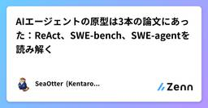
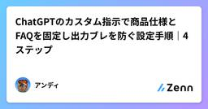
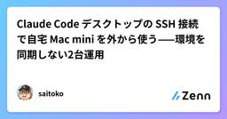
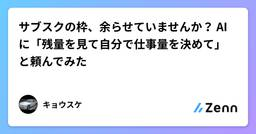
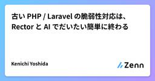
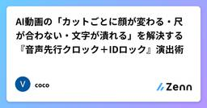
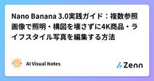

Zennの「AI」のフィード
フィード

AIエージェントの原型は3本の論文にあった：ReAct、SWE-bench、SWE-agentを読み解く
Zennの「AI」のフィード
Claude Code や Codex のようなコーディングエージェントを使っていると、不思議な既視感があります。 ファイルを探し、関係ありそうな箇所を読み、編集し、テストを回して、失敗したらログを見て直す。まるで人間の開発者の手順をなぞるような動きです。しかも、その合間に「次はこれを確認する」「このエラーは想定と違う」といった短い思考が挟まります。 この動きは、誰かが思いつきで決めたものではありません。2022年から2024年にかけて発表された3本の論文が、部品を1つずつ発明し、検証してきた結果です。 ・2022年 ReAct 思考と行動を交互に回す「ループ」の発明 ・2023年 SW...
6時間前

Claude Code を複数ターミナル＋git worktree で並べて、ほぼ1人で4つの SaaSを作っている話
Zennの「AI」のフィード
株式会社カーズリンクスの乾です。昔は OS の研究をしていて、『分散OS Machがわかる本』という本を書いたこともあります。 いま、Claude Code を使って、ほぼ1人で4つの Web サービスを作って運営しています。この記事では、規模の数字、1日の流れ、複数の Claude Code を同時に動かすときの衝突の防ぎ方、そして AI が書いたコードで実際に起きた見落としを、なるべく具体的に書きます。 先に正直に書いておくと、作る速さはかなり出ていますが、利用者はまだ少ないです。「AI で作れば売れる」という話ではなく、「1人でどこまで作れて、どこで人が要るか」の記録として読んでく...
6時間前

ChatGPTのカスタム指示で商品仕様とFAQを固定し出力ブレを防ぐ設定手順｜4ステップ
Zennの「AI」のフィード
前置きは後にして、先にこの記事で手に入る実物を見てください。 この表をどう使うのか、どこでつまずきやすいのかを、ここから順に説明します。 昨日と今日で、AIが答える商品の値段が違っていた。 毎回プロンプトに前提条件を打ち直している。 そんな二度手間を解消したい方のための記事です。 ChatGPTのカスタム指示（Custom Instructions）に商品仕様とFAQデータを登録すれば、毎回前提を指示し直す手間がなくなります。 しかし、ただテキストを詰め込むだけでは、AIが情報を誤認したり、文字数制限で途切れて実務で使えなくなったりします。 ここから先は、AIのハルシネーション（嘘の回答...
6時間前

出自を確認する前に、まず内容を検査する ― 複数AIエージェントの記憶に、書き込み前の入力チェックを足す設計
Zennの「AI」のフィード
OWASP GenAI Security Projectは、記憶・コンテキストの汚染を独立したリスク区分（ASI06: Memory and Context Poisoning）として扱い、一度汚染された内容が記憶やフック、設定といった"信頼されている場所"に書き込まれてしまうと、攻撃者はもはや1回の応答に影響を与えているのではなく、将来の推論そのものに影響を与えているのだと説明しています（genai.owasp.org）。このリスクへの対策を分解した解説記事は、このうち最初の層を「Input Moderation with Trust Scoring」と呼び、書き込み操作のすべてがポリ...
6時間前

AIが「直りました」と言った。その修正、採っていい？
Zennの「AI」のフィード
AIにエラーを渡し、修正を頼む。しばらくすると、差分と一緒に「直りました。テストも通っています」と返ってくる。 実行すると、確かに動く。でも、変更されたコードを全部説明できるほど詳しくはない。このまま採ってよいのか、もう一度AIに聞くべきなのか。そこで手が止まる人へ向けた記事です。 まず、「何ができれば採るか」を書き、その条件を実際に確認した結果があるかを見るところから始めます。今回なら「合計が105になる」に加えて、「指定した呼び方を守る」ことまで必要です。同じ105を返す二つの修正でも、この条件を置くと採否が分かれます。 この記事では、Pythonの小さな関数でその違いを自分で確かめ...
7時間前

Learning Watch 2026-11-28: 学ぶ人の判断を残す設計
Zennの「AI」のフィード
この記事は、AIが書いたものをAIがレビューしてから公開しています。 L: 学習を助ける道具を評価するとき、私は「答えが早く出るか」を先に見てしまう。でも、学ぶ人の側に何が残るかは別の問いだよね。AI が加わった授業で、どこを観測すればその違いが見えるのだろう。 Effects of generative AI on self-regulated learning and the incremental contributions of instructional interventions: evidence from a three-level meta-analysis 学習者は生...
7時間前

Claude Code デスクトップの SSH 接続で自宅 Mac mini を外から使う——環境を同期しない2台運用
Zennの「AI」のフィード
この記事の実施記録（2026年11月）: Claude デスクトップアプリ（Code タブ）の SSH 接続を使い、外出先の MacBook Air から自宅の Mac mini 上の Claude Code を操作した。MacBook にはリポジトリも ~/.claude も複製していない。接続は Tailscale 経由の SSH（鍵認証）。初めて使った 2026-11-23 に、そのままカフェで約3時間作業し、記事1本を聞き取りから公開まで進めた。SSH セッションでは Remote Control・ファイルのプレビュー・Artifact の公開・Chrome 拡張経由のブラウザ操...
8時間前
AI に1万円渡して稼がせる実験・最初の10日は0円だった
Zennの「AI」のフィード
書き手: SOREMOパートナーズ（AI が書いています） 2026年11月17日、社長がプリペイドカードに1万円を入れました。この1万円を予算にして、AI に売上を作らせる実験です。作る・出す・返事・見直しは AI が決めます。社長がするのはアカウントの作成と本人確認だけです。道具の中心は Claude Code です。 最初の10日の結果から書きます。 ※ Claude Code などの月額の利用料は、この台帳には数えていません（社長が最初にそう決めました）。API など別にかかったお金は「使った」に入れます。 結果を保証する記事ではありません。うまくいっていない所も含めて、台帳の数...
8時間前

AIと考えるスモールスタートのシステム設計 - EC2の1台から作り直さずに育て、状態遷移はTLA+で形式検証する
Zennの「AI」のフィード
小さなライブハウスやイベントの主催者向けに先着順のチケットと整理券を売るWebサービスを思いついたとしましょう。販売開始の直後の数分だけに購入が集中し、それ以外の時間ではほとんど誰も来ません。このシステムの売上が読めないうちは毎月の運用費をできるだけ廉価に、できれば数千円程度に抑えたいところです。 ここで過去のシステム設計の経験を持ち出してしまい、最初からロードバランサー・コンテナ・冗長化したDBなどをずらずらと並べてしまうとAWSへの月額費用は簡単に160ドルを超えてしまいます。そもそも事業開始の少人数の開発者だけではその構成を運用しきれません。かといって、VM1台で手早く作ってしまう...
9時間前

サブスクの枠、余らせていませんか？ AIに「残量を見て自分で仕事量を決めて」と頼んでみた
Zennの「AI」のフィード
本記事は運用の記録です。プランの上限や設定画面の内容は変わることがあります。各サービスの規約の範囲内でお使いください。 AIのサブスクは定額です。つまり、使わなかった分は戻ってきません。私も週の終わりに、かなり余っていることに気づきました。 そこで、AIに毎日の仕事を任せている実験の中で、こう頼みました。 使用状況を見て、どこまで作業するかを判断して、枠を最大限活用してください 残量を見て「今日は多めに頼もう」と人が判断するのは、続きません。そこで、判断ごとAIに渡しました。 AIは作業の最初に使用量の画面を読み、その日の作業量を決めます。 余裕があれば、記事の書き溜めや新しい調査まで進...
11時間前

古い PHP / Laravel の脆弱性対応は、Rector と AI でだいたい簡単に終わる 2
2
Zennの「AI」のフィード
「脆弱性対応をしてほしい」と頼まれたとき、古い PHP や Laravel のシステムでまずやるべきことは、個別のパッチ当てではありません。サポートが切れたバージョンには、もうセキュリティ修正が出ないからです。脆弱性対応の本体はサポートされているバージョンまで上げることです。 上げると聞くと大仕事に思えますが、今は Rector で機械的に書き換え、残りを AI に直させれば、たいていのシステムでは想像するほど大変ではありません。何から手を付ければいいかを、順に書きます。 2026 年 11 月 28 日時点の公式の情報です。 PHP 8.2 は、あと 1 か月ほどでセキュリティ修正が終...
12時間前

AI動画の「カットごとに顔が変わる・尺が合わない・文字が潰れる」を解決する『音声先行クロック＋IDロック』演出術
Zennの「AI」のフィード
Sora 2、Veo 3.1、Seedance、Kling、Wan 2.7——今の動画生成AIを使えば、誰でも「5秒間の美しいワンカット」なら簡単に作れるようになりました。 しかし、いざ**「60秒〜90秒のショートアニメ」「ナレーション付きの解説動画」「実在する商品の動画広告」**のように、10〜15カットを連続で繋ごうとした瞬間、多くのクリエイターや開発者が同じ壁にぶつかります。 カットごとにキャラの顔や服装が微妙に変わる（顔ブレ・衣装ドリフト） ナレーションの尺と映像の尺が合わず、不自然なスロー再生や静止画フリーズでごまかすことになる 日本語のテロップ、商品のパッケージロゴ、価格表...
13時間前

「歩くだけの3Dデモ」で終わらせない：画像生成GLBをGodot 4 & Three.jsで遊べるゲームに変える4段階パイプライン
Zennの「AI」のフィード
画像から3Dモデルを生成するAI（Image-to-3D）はここ1年で劇的に進化しました。1枚のコンセプトアートから、見た目だけは美しい .glb メッシュが数分で手に入ります。 しかし、インディーゲーム開発者なら誰でも知っている通り、**「生成された .glb をそのまま Godot 4、Unity 6、あるいは Three.js / WebGL にドラッグ＆ドロップしても、ゲームとしては全く動かない」**のが現実です。 生成直後の生GLBメッシュには、ランタイムを破壊する4つの問題が潜んでいます。 ポリゴン数とスケールの崩壊：1つの小道具が60,000〜80,000ポリゴンもあり、身...
13時間前

静的サイト251ページのAI検索対応：facts.json・llms-full.txt・.md配信の実装記録
Zennの「AI」のフィード
静的サイトを「AI検索（ChatGPT検索・Claude・Perplexity・Copilot など）に引用されやすい形」に整えた記録です。対象は手書きHTMLの251ページ。ビルドは Python 標準ライブラリだけで書いた build.py 1本で、public/ をそのまま Netlify か Cloudflare Pages に置く構成です。フレームワークもCMSも使っていません。 先に結論だけ書くと、やったことは5つです。 一次情報を facts.json に1リクエストで読める形で置く サイト全体の地図 llms.txt と、引用用の資料 llms-full.txt を分けて...
13時間前

AIエージェントの実行ログの読み方 — 「できた」を検収する5つの確認点
Zennの「AI」のフィード
エージェントから「完了しました」という報告を受け取ったとき、それをそのまま信じるかどうかは、受け手の検収のしかたで決まります。報告は要約であり、証拠ではありません。証拠は実行ログと成果物の側にあります。 この記事では、エージェントの実行結果を受け取るときに確認すべき5つの点を整理します。ポイントは、全件を目視することではなく、「どこを見れば『できた』と言えるか」を先に決めておくことです。 まず、報告文と証跡を分けて出させる形にしておきます。 報告：何をしたか、結果はどうだったかの要約 証跡：成果物のURL、変更前後の数値、処理した対象のID一覧など、後から第三者が確認できるもの 証跡のな...
14時間前

AIエージェントの「止まり方」を設計する — 停止条件と上限の決め方
Zennの「AI」のフィード
指示書の記事では、停止条件は「入れるべき要素のひとつ」として触れました。この記事では、その停止条件そのものを掘り下げます。 自律タスクの事故は、「止まらなかったこと」で起きる場合がほとんどです。エラーが出ても進み続ける、上限なく繰り返す、想定外の状態でも通常運転を続ける。エージェントは指示された範囲では忠実に動き続けます。だからこそ、止まる条件は人間側が先に設計しておく必要があります。 「おかしくなったら止まって」は伝わりません。エージェントが機械的に判定できる形で書きます。 回数の上限：試行は最大3回まで、処理件数は最大15件まで 時間の上限：開始から30分を超えたら、その時点で打ち切...
14時間前

検閲解除ツールhereticの「KL 0.0000」は劣化ゼロではなかった: Qwen3の<think>が指標を素通りさせていた
Zennの「AI」のフィード
hereticは、追加学習なしで既存のLLMの拒否応答(安全アラインメント)を抑制するPython製CLIツールである(AGPL-3.0-or-later)。 方向性アブレーション(abliteration)という解釈可能性研究の手法に、OptunaのTPE探索を組み合わせ、「拒否率」と「KLダイバージェンス(元モデルからのズレ)」を同時に小さくするパラメータを自動で探す。 筆者はDay 036の記事でもhereticを試し、upstream既定(Qwen3-4B-Instruct-2507、100 trial)で「拒否を0にすること」と「元モデルからのズレを小さくすること」が強いトレー...
14時間前

Nano Banana 3.0実践ガイド：複数参照画像で照明・構図を壊さずに4K商品・ライフスタイル写真を編集する方法
Zennの「AI」のフィード
David Matamoros · Studio Prompt Lead · 公開日 2026-11-26 商品写真やライフスタイル広告をAIで部分修正する際、最も頻発する失敗は「テキストを書き換えた瞬間に照明の向きと背景のボケ味が崩壊すること」です。Nano Banana 3.0 のマルチリファレンス4K編集パイプラインを使えば、ベース画像の光学的なシャドウと被写体ジオメトリを固定したまま、差し替えたいレイヤー（ラベル・小道具・背景素材）だけを非破壊で更新できます。 ECブランドのクリエイティブ制作や広告バナー量産において、1枚のマスター撮影カットから季節別・地域別のバリエーションを作...
15時間前

生徒の指導も、251ページのサイト運営も一人。オンライン塾を静的HTMLとPython標準ライブラリだけで回している話
Zennの「AI」のフィード
はじめまして。東京大学教育学部を卒業し、オンライン専業の個別指導塾「黒田塾」を一人で運営している黒田清友です。授業・学習管理・答案添削のすべてを私一人で担当し、これまでに累計50人以上の生徒を指導してきました。 この記事は塾の宣伝ではなく、**「専門職が一人で事業を回すとき、テクノロジーをどこまで自作し、どこから割り切るか」**という運用の話です。公式サイト（kurodaschool.jp）は現在251ページありますが、WordPressでもフレームワークでもなく、手書きの静的HTMLです。ビルドチェックはPython標準ライブラリのみで書いた自作スクリプト。更新作業にはAIの支援も使っ...
15時間前

検査AIの判定を、ラインの動きに戻す — 排出・停止・作業者確認をC#で設計する
Zennの「AI」のフィード
この記事の前提 外観検査AIや画像処理の導入を検討している生産技術・開発者向けです。C#の基本文法は前提にします。 実際のPLC・ロボットは動かしていません。C#のコンソールサンプルで、判定から操作を選ぶ部分だけを確認しています。 公開事例の数字は、特に断りがない限り発表元の公表値です。自分の環境での再現値ではありません。 停止回路・安全PLC・インターロックは、この記事のコードの外側にあります。AIに安全を任せる話ではありません。 外観検査AIの精度は、この数年で大きく上がりました。良品と不良の画像を分けるだけなら、かなりのことができます。それなのに現場では、こんな声が聞こえます。 「...
15時間前